Random Variable Transition Guide#
Background#
Prior to SciPy 1.15, all of SciPy’s continuous probability distributions (e.g. scipy.stats.norm) have been instances of subclasses of scipy.stats.rv_continuous.
from scipy import stats
dist = stats.norm
type(dist)
scipy.stats._continuous_distns.norm_gen
isinstance(dist, stats.rv_continuous)
True
There were two obvious ways to work these objects.
According to the more common way, both “arguments” (e.g. x) and “distribution parameters” (e.g. loc, scale) were provided as inputs to methods of the object.
x, loc, scale = 1., 0., 1.
dist.pdf(x, loc, scale)
np.float64(0.24197072451914337)
The less common approach was to invoke the __call__ method of the distribution object, which returned an instance of rv_continuous_frozen, regardless of the original class.
frozen = stats.norm()
type(frozen)
scipy.stats._distn_infrastructure.rv_continuous_frozen
Methods of this new object accept only arguments, not the distribution parameters.
frozen.pdf(x)
np.float64(0.24197072451914337)
In a sense, the instances of rv_continuous like norm represented “distribution families”, which require parameters to identify a particular probability distribution, and an instance of rv_continuous_frozen was akin to a “random variable” - a mathematical object that follows a particular probability distribution.
Both approaches are valid and have advantages in certain situations. For instance, stats.norm.pdf(x) appears more natural than stats.norm().pdf(x) for such a simple invocation or when methods are viewed as functions of distribution parameters rather than the usual arguments (e.g., likelihood). However, the former approach has a few inherent disadvantages; e.g., all of SciPy’s 125 continuous distributions have to be instantiated at import time, distribution parameters must be validated every time a method is called, and documentation of methods must either a) be generated separately for every method of every distribution or b) omit the shape parameters that are unique for each distribution.
To address these and other shortcomings, gh-15928 proposed a new, separate infrastructure based on the latter (random variable) approach. This transition guide documents how users of rv_continuous and rv_continuous_frozen can migrate to the new infrastructure.
Note: The new infrastructure may not yet be as convenient for some use cases, especially fitting distribution parameters to data. Users are welcome to continue to use the old infrastructure if it suits their needs; it is not deprecated at this time.
Basics#
In the new infrastructure, distribution families are classes named according to CamelCase conventions. They must be instantiated before use, with parameters passed as keyword-only arguments.
Instances of the distribution family classes can be thought of as random variables, which are commonly denoted in mathematics using capital letters.
from scipy import stats
mu, sigma = 0, 1
X = stats.Normal(mu=mu, sigma=sigma)
X
Normal(mu=np.float64(0.0), sigma=np.float64(1.0))
Once instantiated, shape parameters can be read (but not written) as attributes.
X.mu, X.sigma
(np.float64(0.0), np.float64(1.0))
The documentation of scipy.stats.Normal contains links to detailed documentation of each of its methods. (Compare, for instance, against the documentation of scipy.stats.norm.)
Note: Although only Normal and Uniform have rendered documentation and can be imported directly from stats as of SciPy 1.15, almost all other old distributions can be used with the new interface via make_distribution (discussed shortly).
Methods are then called by passing only the argument(s), if there are any, not distribution parameters.
X.mean()
np.float64(0.0)
X.pdf(x)
np.float64(0.24197072451914337)
For simple calls like this (e.g. the argument is a valid float), calls to methods of the new random variables will typically be faster than comparable calls to the old distribution methods.
%timeit X.pdf(x)
6.7 μs ± 8.16 ns per loop (mean ± std. dev. of 7 runs, 100,000 loops each)
%timeit frozen.pdf(x)
56 μs ± 2.11 μs per loop (mean ± std. dev. of 7 runs, 10,000 loops each)
%timeit dist.pdf(x, loc=mu, scale=sigma)
53.4 μs ± 350 ns per loop (mean ± std. dev. of 7 runs, 10,000 loops each)
Note that the way X.pdf and frozen.pdf are called is identical, and the call to dist.pdf is very similar - the only difference is that the call to dist.pdf includes the shape parameters, whereas in the new infrastructure, shape parameters are only provided when the random variable is instantiated.
Besides pdf and mean, several other methods of the new infrastructure are essentially the same as the old methods.
logpdf(logarithm of probability density function)cdf(cumulative distribution function)logcdf(logarithm of cumulative distribution function)entropy(differential entropy)mediansupport
Other methods have new names, but are otherwise drop-in replacements.
sf(survival function) \(\rightarrow\)ccdf(complementary cumulative distribution function)logsf\(\rightarrow\)logccdfppf(percent point function) \(\rightarrow\)icdf(inverse cumulative distribution function)isf(inverse survival function) \(\rightarrow\)iccdf(inverse complementary cumulative distribution function)std\(\rightarrow\)standard_deviationvar\(\rightarrow\)variance
The new infrastructure has several new methods in the same vein as those above.
ilogcdf(inverse of the logarithm of the cumulative distribution function)ilogccdf(inverse of the logarithm of the complementary cumulative distribution function)logentropy(logarithm of the entropy)mode(mode of the distribution)skewnesskurtosis(non-excess kurtosis; see “Standardized Moments” below)
And it has a new plot method for convenience
import matplotlib.pyplot as plt
X.plot()
plt.show()
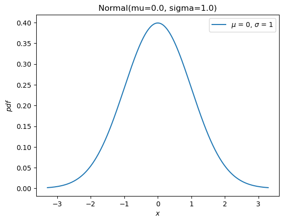
Most of the remaining methods of the old infrastructure (rvs, moment, stats, interval, fit, nnlf, fit_loc_scale, and expect) have analogous functionality, but some care is required. Before describing the replacements, we briefly mention how to work with random variables that are not normally distributed: almost all old distribution objects can be converted into a new distribution class with scipy.stats.make_distribution, and the new distribution class can be instantiated by passing the shape parameters as keyword arguments. For instance, consider the Weibull distribution. We can create a new class that is an abstraction of the distribution family like:
Weibull = stats.make_distribution(stats.weibull_min)
print(Weibull.__doc__[:288]) # help(Weibull) prints this and (too much) more
This class represents `scipy.stats.weibull_min` as a subclass of `<class 'scipy.stats._distribution_infrastructure.ContinuousDistribution'>`.
The `repr`/`str` of class instances is `Weibull`.
The PDF of the distribution is defined for :math:`x \in [0.0, \infty]`.
This class accepts one p
According to the documentation of weibull_min, the shape parameter is denoted c, so we can instantiate a random variable by passing c as a keyword argument to the new Weibull class.
c = 2.
X = Weibull(c=c)
X.plot()
plt.show()
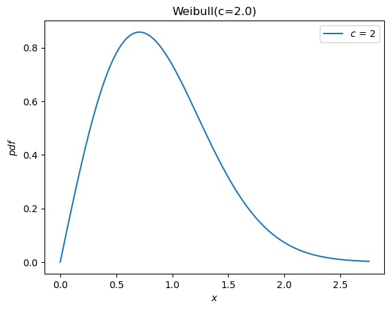
Previously, all distributions inherited loc and scale distribution parameters.
These are no longer accepted. Instead, random variables can be shifted and scaled with arithmetic operators.
Y = 2*X + 1
Y.plot() # note the change in the abscissae
plt.show()
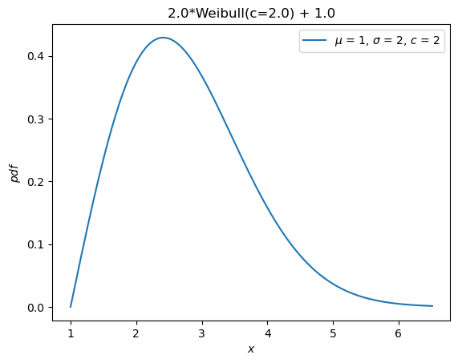
A separate distribution, weibull_max, was provided as the reflection of weibull_min about the origin. Now, this is just -X.
Y = -X
Y.plot()
plt.show()
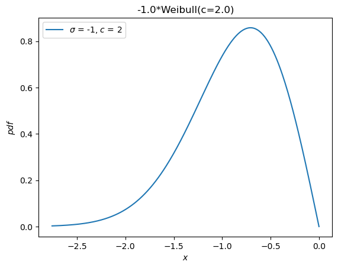
Moments#
The old infrastructure offers a moments method for raw moments. When only the order is specified, the new moment method is a drop-in replacement.
stats.weibull_min.moment(1, c), X.moment(1) # first raw moment of the Weibull distribution with shape c
(np.float64(0.8862269254527579), np.float64(0.8862269254527579))
However, the old infrastructure also has a stats method, which provided various statistics of the distribution. The following statistics were associated with the indicated characters.
Mean (first raw moment about the origin,
'm')Variance (second central moment,
'v')Skewness (third standardized moment,
's')Excess kurtosis (fourth standardized moment minus 3,
'k')
For example:
stats.weibull_min.stats(c, moments='mvsk')
(np.float64(0.8862269254527579),
np.float64(0.21460183660255183),
np.float64(0.6311106578189344),
np.float64(0.24508930068764556))
Now, moments of any order and kind (raw, central, and standardized) can be computed by passing the appropriate arguments to the new moment method.
(X.moment(order=1, kind='raw'),
X.moment(order=2, kind='central'),
X.moment(order=3, kind='standardized'),
X.moment(order=4, kind='standardized'))
(np.float64(0.8862269254527579),
np.float64(0.21460183660255183),
np.float64(0.6311106578189344),
np.float64(3.2450893006876314))
Note the difference in definition of kurtosis. Previously, the “excess” (AKA “Fisher’s”) kurtosis was provided. As a matter of convention (rather than the natural mathematical definition), this is the standardized fourth moment shifted by a constant value (3) to give a value of 0.0 for the normal distribution.
stats.norm.stats(moments='k')
np.float64(0.0)
The new moment and kurtosis methods do not observe this convention by default; they report the standardized fourth moment according to the mathematical definition. This is also known as the “non-excess” (or “Pearson’s”) kurtosis, and for the standard normal, it has a value of 3.0.
stats.Normal().moment(4, kind='standardized')
np.float64(3.0)
For convenience, the kurtosis method offers a convention argument to select between the two.
stats.Normal().kurtosis(convention='excess'), stats.Normal().kurtosis(convention='non-excess')
(np.float64(0.0), np.float64(3.0))
Random Variates#
The old infrastructure’s rvs method has been replaced with sample, but there are two differences that should be noted when either 1) control of the random state is required or 2) arrays are used for shape, location, or scale parameters.
First, argument random_state is replaced by rng per SPEC 7. A pattern to control the random state in the past has been to use numpy.random.seed or to pass integer seeds to the random_state argument. The integer seeds were converted to instances of numpy.random.RandomState, so behavior for a given integer seed would be identical in these two cases:
import numpy as np
np.random.seed(1)
dist = stats.norm
dist.rvs(), dist.rvs(random_state=1)
(np.float64(1.6243453636632417), np.float64(1.6243453636632417))
In the new infrastructure, pass instances of numpy.Generator to the rng argument of sample to control the random state. Note that integer seeds are now converted to instances of numpy.random.Generator, not instances of numpy.random.RandomState.
X = stats.Normal()
rng = np.random.default_rng(1) # instantiate a numpy.random.Generator
X.sample(rng=rng), X.sample(rng=1)
(np.float64(0.345584192064786), np.float64(0.345584192064786))
Second, the argument shape replaces argument size.
dist.rvs(size=(3, 4))
array([[-0.61175641, -0.52817175, -1.07296862, 0.86540763],
[-2.3015387 , 1.74481176, -0.7612069 , 0.3190391 ],
[-0.24937038, 1.46210794, -2.06014071, -0.3224172 ]])
X.sample(shape=(3, 4))
array([[ 1.32986255, 0.68405606, -2.00090748, 0.06518554],
[ 1.05668022, -0.08525123, -0.6514321 , 0.62501929],
[-0.06554485, 0.05764884, -0.58604186, -1.59480397]])
Besides the difference in name, there is a difference in behavior when array shape parameters are involved. Previously, the shape of distribution parameter arrays had to be included in size.
dist.rvs(size=(3, 4, 2), loc=[0, 1]).shape # `loc` has shape (2,)
(3, 4, 2)
Now, the shape of the parameter arrays is considered to be a property of the random variable object itself. Specifying the shape of array shape parameters would be redundant, so it is not included when specifying the shape of the sample.
Y = stats.Normal(mu=[0, 1])
Y.sample(shape=(3, 4)).shape # the sample has shape (3, 4); each element is of shape (2,)
(3, 4, 2)
Probability Mass (AKA “Confidence”) Intervals#
The old infrastructure offered an interval method which, by default, would return a symmetric (about the median) interval containing a specified percentage of the distribution’s probability mass.
a = 0.95
dist.interval(confidence=a)
(np.float64(-1.959963984540054), np.float64(1.959963984540054))
Now, call the inverse CDF and complementary CDF methods with the desired probability mass in each tail.
p = 1 - a
X.icdf(p/2), X.iccdf(p/2)
(np.float64(-1.959963984540054), np.float64(1.959963984540054))
Likelihood Function#
The old infrastructure offers a function to compute the negative log-likelihood function, erroneously named nnlf (instead of nllf). It accepts the parameters of the distribution as a tuple and observations as an array.
mu = 0
sigma = 1
data = stats.norm.rvs(size=100, loc=mu, scale=sigma)
stats.norm.nnlf((mu, sigma), data)
np.float64(131.07116392314364)
Now, simply compute the negative log-likelihood according to its mathematical definition.
X = stats.Normal(mu=mu, sigma=sigma)
-X.logpdf(data).sum()
np.float64(131.07116392314364)
Expected Values#
The expect method of the old infrastructure estimates a definite integral of an arbitrary function weighted by the PDF of the distribution. For instance, the fourth moment of the distribution is given by:
def f(x): return x**4
stats.norm.expect(f, lb=-np.inf, ub=np.inf)
np.float64(3.000000000000001)
This provides little added convenience over what the source code does: use scipy.integrate.quad to perform the integration numerically.
from scipy import integrate
def f(x): return x**4 * stats.norm.pdf(x)
integrate.quad(f, a=-np.inf, b=np.inf) # integral estimate, estimate of the error
(3.0000000000000053, 1.2043244026618655e-08)
Of course, this can just as easily be done with the new infrastructure.
def f(x): return x**4 * X.pdf(x)
integrate.quad(f, a=-np.inf, b=np.inf) # integral estimate, estimate of the error
(3.0000000000000053, 1.2043244043338238e-08)
The conditional argument simply scales the result by the inverse of the probability mass contained within the interval.
a, b = -1, 3
def f(x): return x**4
stats.norm.expect(f, lb=a, ub=b, conditional=True)
np.float64(1.657813862143119)
Using quad directly, that is:
def f(x): return x**4 * stats.norm.pdf(x)
prob = stats.norm.cdf(b) - stats.norm.cdf(a)
integrate.quad(f, a=a, b=b)[0] / prob
np.float64(1.6578138621431193)
And with the new random variables:
integrate.quad(f, a=a, b=b)[0] / X.cdf(a, b)
np.float64(1.6578138621431193)
Note that the cdf method of the new random variables accepts two arguments to compute the probability mass within the specified interval. In many cases, this can avoid subtractive error (“catastrophic cancellation”) when the probability mass is very small.
Fitting#
Location / Scale Estimation#
The old infrastructure offered a function to estimate location and scale parameters of the distribution from data.
rng = np.random.default_rng(91392794601852341588152500276639671056)
dist = stats.weibull_min
c, loc, scale = 0.5, 0, 4.
data = dist.rvs(size=100, c=c, loc=loc, scale=scale, random_state=rng)
dist.fit_loc_scale(data, c)
# compare against 0 (default location) and 4 (specified scale)
(np.float64(1.8268432669973347), np.float64(1.9640905288934327))
Based on the source code, it is easy to replicate the method.
X = Weibull(c=c)
def fit_loc_scale(X, data):
m, v = X.mean(), X.variance()
m_, v_ = data.mean(), data.var()
scale = np.sqrt(v_ / v)
loc = m_ - scale*m
return loc, scale
fit_loc_scale(X, data)
(np.float64(1.8268432669973347), np.float64(1.9640905288934327))
Note that the estimates are quite poor in this example, and poor performance of the heuristic factored into the decision not to provide a replacement.
Maximum Likelihood Estimation#
The last method of the old infrastructure is fit, which estimates the location, scale, and shape parameters of an underlying distribution given a sample from the distribution.
c_, loc_, scale_ = stats.weibull_min.fit(data)
c_, loc_, scale_
(np.float64(0.5960699537061247),
np.float64(1.8950104942593064e-05),
np.float64(4.015875612107546))
The convenience of this method is a blessing and a curse.
When it works, the simplicity is much appreciated. For some distributions, analytical expressions for the maximum likelihood estimates (MLE) of the parameters have been programmed manually, and for these distributions, the fit method is quite reliable.
For most distributions, however, fitting is performed by numerical minimization of the negative log-likelihood function. This is not guaranteed to be successful - both because of inherent limitations of MLE and the state of the art of numerical optimization - and in these cases, the user of fit is stuck. However, a modicum of understanding goes a long way toward ensuring success, so here we present a mini-tutorial of fitting using the new infrastructure.
First, note that MLE is one of several potential strategies for fitting distributions to data. It does nothing more than find the values of the distribution parameters for which the negative log-likelihood (NLLF) is minimized. Note that for the distribution from which the data were generated, the NLLF is:
stats.weibull_min.nnlf((c, loc, scale), data)
np.float64(246.9503871545133)
The NLLF of the parameters estimated using fit are lower:
stats.weibull_min.nnlf((c_, loc_, scale_), data)
np.float64(230.35385152369787)
Therefore, fit considers its job done, whether or not this satisfies the user’s notions of a “good fit” or whether the parameters are within reasonable bounds. Besides allowing the user to specify a guess for distribution parameters, it gives little control over the process. (Note: technically, the optimizer argument can be used for greater control, but this is not well documented, and its use negates any convenience offered by the fit method.)
Another problem is that MLE is inherently poorly behaved for some distributions. In this example, for instance, we can make the NLLF as low as we please simply by setting the location to the minimum of the data - even for bogus values of the shape and scale parameters.
stats.weibull_min.nnlf((0.1, np.min(data), 10), data)
np.float64(-inf)
Compounding with these issues is that fit estimates all distribution parameters by default, including the location. In the example above, we are probably only interested in the more common two-parameter Weibull distribution because the actual location is zero. fit can accommodate this by specifying that the location is a fixed parameter.
# c_, loc_, scale_ = stats.weibull_min.fit(data, loc=0) # careful! this provides loc=0 as a *guess*
c_, loc_, scale_ = stats.weibull_min.fit(data, floc=0)
c_, loc_, scale_
(np.float64(0.5834128280886433), 0, np.float64(3.829972848420729))
stats.weibull_min.nnlf((c_, loc_, scale_), data)
np.float64(244.9617429249505)
But by providing a fit method that purportedly “just works”, users are encouraged to neglect some of these important details.
Instead, we suggest that it is almost as simple to fit distributions to data using the generic optimization tools provided by SciPy. However, this allows the user to perform the fit according to their preferred objective function, provides options when things don’t work as expected, and helps the user to avoid the most common pitfalls.
For instance, suppose our desired objective function is indeed the negative log likelihood. It is simple to define as a function of the shape parameter c and scale only, leaving the location at its default of zero.
def nllf(x):
c, scale = x # pass (only) `c` and `scale` as elements of `x`
X = Weibull(c=c) * scale
return -X.logpdf(data).sum()
nllf((c_, scale_))
np.float64(244.96174292495053)
To perform the minimization, we can use scipy.optimize.minimize.
from scipy import optimize
eps = 1e-10 # numerical tolerance to avoid invalid parameters
lb = [eps, eps] # lower bound on `c` and `scale`
ub = [10, 10] # upper bound on `c` and `scale`
x0 = [1, 1] # guess to get optimization started
bounds = optimize.Bounds(lb, ub)
res_mle = optimize.minimize(nllf, x0, bounds=bounds)
res_mle
message: CONVERGENCE: NORM OF PROJECTED GRADIENT <= PGTOL
success: True
status: 0
fun: 244.9617429227769
x: [ 5.834e-01 3.830e+00]
nit: 13
jac: [-2.842e-06 -5.684e-06]
nfev: 45
njev: 15
hess_inv: <2x2 LbfgsInvHessProduct with dtype=float64>
The value of the objective function is essentially identical, and the PDFs are indistinguishable.
import matplotlib.pyplot as plt
x = np.linspace(eps, 15, 300)
c_, scale_ = res_mle.x
X = Weibull(c=c_)*scale_
plt.plot(x, X.pdf(x), '-', label='numerical optimization')
c_, _, scale_ = stats.weibull_min.fit(data, floc=0)
Y = Weibull(c=c_)*scale_
plt.plot(x, Y.pdf(x), '--', label='`weibull_min.fit`')
plt.hist(data, bins=np.linspace(0, 20, 30), density=True, alpha=0.1)
plt.xlabel('x')
plt.ylabel('pdf(x)')
plt.legend()
plt.ylim(0, 0.5)
plt.show()
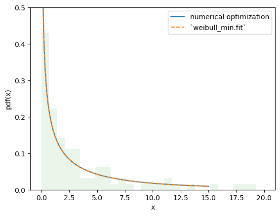
However, with this approach, it is trivial to make changes to the fitting procedure to suit our needs, enabling estimation procedures other than those provided by rv_continuous.fit. For instance, we can perform maximum spacing estimation (MSE) by changing the objective function to the negative log product spacing as follows.
def nlps(x):
c, scale = x
X = Weibull(c=c) * scale
x = np.sort(np.concatenate((data, X.support()))) # Append the endpoints of the support to the data
return -X.logcdf(x[:-1], x[1:]).sum().real # Minimize the sum of the logs the probability mass between points
res_mps = optimize.minimize(nlps, x0, bounds=bounds)
res_mps.x
array([0.55917795, 3.85548036])
For method of L-moments (which attempts to match the distribution and sample L-moments):
def lmoment_residual(x):
c, scale = x
X = Weibull(c=c) * scale
lmoments_X = [X.lmoment(1), X.lmoment(2)] # the first two l-moments of the distribution
lmoments_x = stats.lmoment(data, order=[1, 2]) # first two l-moments of the data
return np.linalg.norm(lmoments_x - lmoments_X) # Minimize the norm of the difference
x0 = [0.4, 3] # This method is a bit sensitive to the initial guess
res_lmom = optimize.minimize(lmoment_residual, x0, bounds=bounds)
res_lmom.x, res_lmom.fun # residual should be ~0
(array([0.60943275, 3.90234502]), np.float64(5.028046770670363e-07))
The plots for all three methods look similar and seem to describe the data, giving us some confidence that we have a good fit.
import matplotlib.pyplot as plt
x = np.linspace(eps, 10, 300)
for res, label in [(res_mle, "MLE"), (res_mps, "MPS"), (res_lmom, "L-moments")]:
c_, scale_ = res.x
X = Weibull(c=c_)*scale_
plt.plot(x, X.pdf(x), '-', label=label)
plt.hist(data, bins=np.linspace(0, 10, 30), density=True, alpha=0.1)
plt.xlabel('x')
plt.ylabel('pdf(x)')
plt.legend()
plt.ylim(0, 0.3)
plt.show()
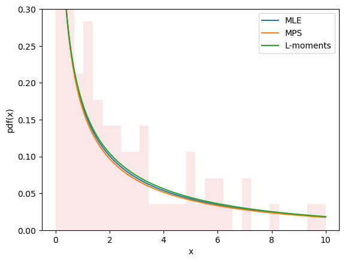
Estimation does not always involve fitting distributions to data. For instance, in gh-12134, a user needed to calculate the shape and scale parameters of the Weibull distribution to achieve a given mean and standard deviation. This fits easily into the same framework.
moments_0 = np.asarray([8, 20]) # desired mean and standard deviation
def f(x):
c, scale = x
X = Weibull(c=c) * scale
moments_X = X.mean(), X.standard_deviation()
return np.linalg.norm(moments_X - moments_0)
bounds.lb = np.asarray([0.1, 0.1]) # the Weibull distribution is problematic for very small c
res = optimize.minimize(f, x0, bounds=bounds, method='slsqp') # easily change the minimization method
res
message: Optimization terminated successfully
success: True
status: 0
fun: 4.594829646235973e-07
x: [ 4.627e-01 3.430e+00]
nit: 21
jac: [ 1.322e+02 -2.331e-01]
nfev: 100
njev: 21
multipliers: []
New and Advanced Features#
Transformations#
Mathematical transformations can be applied to random variables. For instance, many elementary arithmetic operations (+, -, *, /, **) between random variables and scalars work.
For instance, we can see that the reciprocal of a Weibull-distributed RV is distributed according to scipy.stats.invweibull. (An “inverse” distribution is typically the distribution underlying the reciprocal of a random variable.)
c = 10.6
X = Weibull(c=10.6)
Y = 1 / X # compare to `invweibull`
Y.plot()
x = np.linspace(0.8, 2.05, 300)
plt.plot(x, stats.invweibull(c=c).pdf(x), '--')
plt.legend(['`1 / X`', '`invweibull`'])
plt.title("Inverse Weibull PDF")
plt.show()
/home/circleci/repo/build-install/usr/lib/python3.14/site-packages/scipy/stats/_distribution_infrastructure.py:1887: RuntimeWarning: divide by zero encountered in divide
h=lambda u: 1 / u, dh=lambda u: 1 / u ** 2)
/home/circleci/repo/build-install/usr/lib/python3.14/site-packages/scipy/stats/_continuous_distns.py:2802: RuntimeWarning: invalid value encountered in multiply
return c*pow(x, c-1)*np.exp(-pow(x, c))
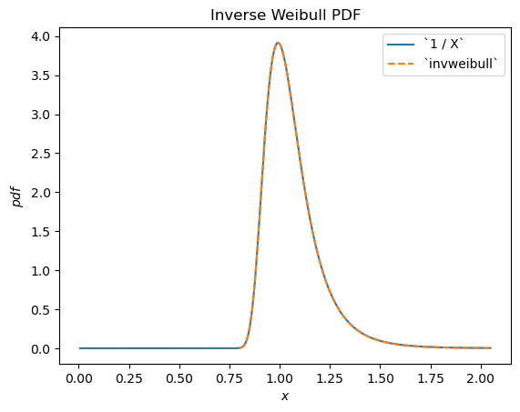
scipy.stats.chi2 describes a sum of the squares of normally-distributed random variables.
X = stats.Normal()
Y = X**2 # compare to chi2
Y.plot(t=('x', eps, 5));
x = np.linspace(eps, 5, 300)
plt.plot(x, stats.chi2(df=1).pdf(x), '--')
plt.ylim(0, 3)
plt.legend(['`X**2`', '`chi2`'])
plt.title("Chi-squared PDF")
plt.show()
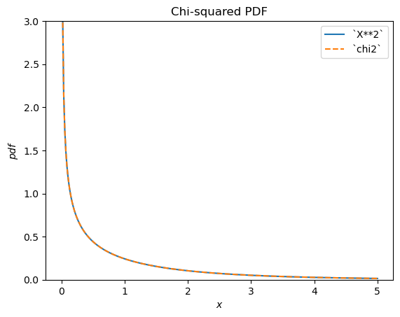
scipy.stats.foldcauchy describes the absolute value of a Cauchy-distributed random variable. (A “folded” distribution is the distribution underlying the absolute value of a random variable.)
Cauchy = stats.make_distribution(stats.cauchy)
c = 4.72
X = Cauchy() + c
Y = abs(X) # compare to `foldcauchy`
Y.plot(t=('x', 0, 60))
x = np.linspace(0, 60, 300)
plt.plot(x, stats.foldcauchy(c=c).pdf(x), '--')
plt.legend(['`abs(X)`', '`foldcauchy`'])
plt.title("Folded Cauchy PDF")
plt.show()
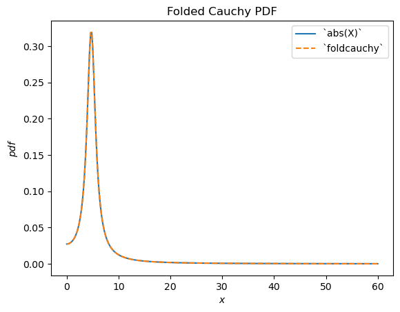
scipy.stats.lognormal describes the exponential of a normally distributed random variable. It is so-named because the logarithm of the resulting random variable is normally distributed. (In general, a “log” distribution is typically the distribution underlying the exponential of a random variable.)
u, s = 1, 0.5
X = stats.Normal()*s + u
Y = stats.exp(X) # compare to `lognorm`
Y.plot(t=('x', eps, 9))
x = np.linspace(eps, 9, 300)
plt.plot(x, stats.lognorm(s=s, scale=np.exp(u)).pdf(x), '--')
plt.legend(['`exp(X)`', '`lognorm`'])
plt.title("Log-Normal PDF")
plt.show()
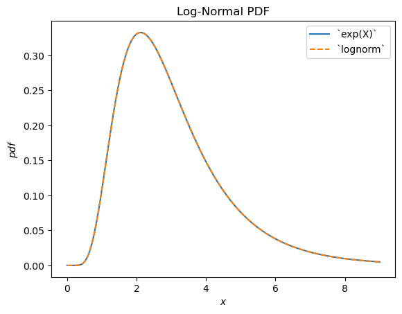
scipy.stats.loggamma describes the logarithm of of a Gamma-distributed random variable. Note that according to typical conventions, the appropriate name of this distribution would be exp-gamma because the exponential of the RV is gamma-distributed.
Gamma = stats.make_distribution(stats.gamma)
a = 0.414
X = Gamma(a=a)
Y = stats.log(X) # compare to `loggamma`
Y.plot()
x = np.linspace(-17.5, 2, 300)
plt.plot(x, stats.loggamma(c=a).pdf(x), '--')
plt.legend(['`log(X)`', '`loggamma`'])
plt.title("Exp-Gamma PDF")
plt.show()
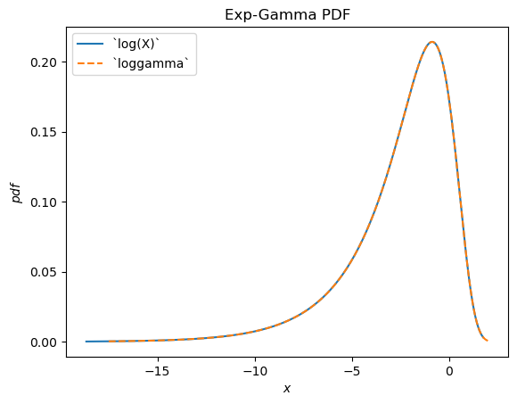
scipy.stats.truncnorm is the distribution underlying a truncated normal random variable. Note that the truncation transformation can be applied either before or after shifting and scaling the normally-distributed random variable, which can make it much easier to achieve the desired result than scipy.stats.truncnorm (which inherently shifts and scales after truncation).
a, b = 0.1, 2
X = stats.Normal()
Y = stats.truncate(X, a, b) # compare to `truncnorm`
Y.plot()
x = np.linspace(a, b, 300)
plt.plot(x, stats.truncnorm(a, b).pdf(x), '--')
plt.legend(['`truncate(X, a, b)`', '`truncnorm`'])
plt.title("Truncated Normal PDF")
plt.show()
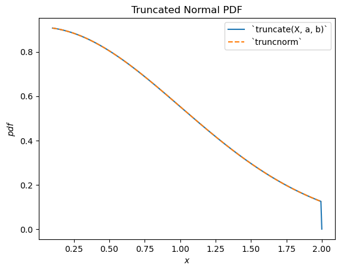
scipy.stats.dgamma is a mixture of two gamma-distributed RVs, one of which is reflected about the origin. (Typically, a “double” distribution is the distribution underlying a mixture of RVs, one of which is reflected.)
a = 1.1
X = Gamma(a=a)
Y = stats.Mixture((X, -X), weights=[0.5, 0.5])
# plot method not available for mixtures
x = np.linspace(-4, 4, 300)
plt.plot(x, Y.pdf(x))
plt.plot(x, stats.dgamma(a=a).pdf(x), '--')
plt.legend(['`Mixture(X, -X)`', '`dgamma`'])
plt.title("Double Gamma PDF")
plt.show()
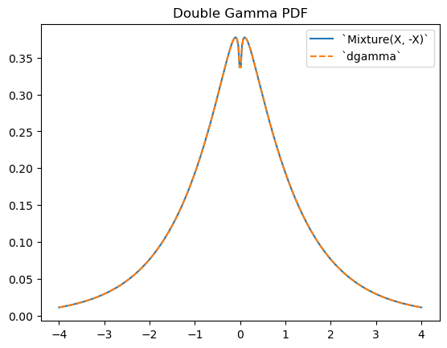
Limitations#
While most arithmetic transformations between random variables and Python scalars or NumPy arrays are supported, there are a few restrictions.
Raising a random variable to the power of an argument is only implemented when the argument is a positive integer.
Raising an argument to the power of a random variable is only implemented when the argument is a positive scalar other than 1.
Division by a random variable is only implemented when the support is either entirely non-negative or non-positive.
The logarithm of a random variable is only implemented when the support is non-negative. (The logarithm of negative values is imaginary.)
Arithmetic operations between two random variables are not yet supported. Note that such operations are much more complex mathematically; for instance, the PDF of the sum of the two random variables involves convolution of the two PDFs.
Also, while transformations are composable, a) truncation and b) shifting/scaling can each be done only once. For instance, Y = 2 * stats.exp(X + 1) will raise an error because this would require shifting before exponentiation and scaling after exponentiation; this is treated as “shifting/scaling” twice. However, a mathematical simplification is possible here (and in many cases) to avoid the problem: Y = (2*math.exp(2)) * stats.exp(X) is equivalent and requires only one scaling operation.
Although the transformations are fairly robust, they all rely on generic implementations which may cause numerical difficulties. If you are concerned about the accuracy of the results of a transformation, consider comparing the resulting PDF against a histogram of a random sample.
X = stats.Normal()
Y = X**3
x = np.linspace(-5, 5, 300)
plt.plot(x, Y.pdf(x), label='pdf')
plt.hist(X.sample(100000)**3, density=True, bins=np.linspace(-5, 5, 100), alpha=0.5);
plt.ylim(0, 2)
plt.show()
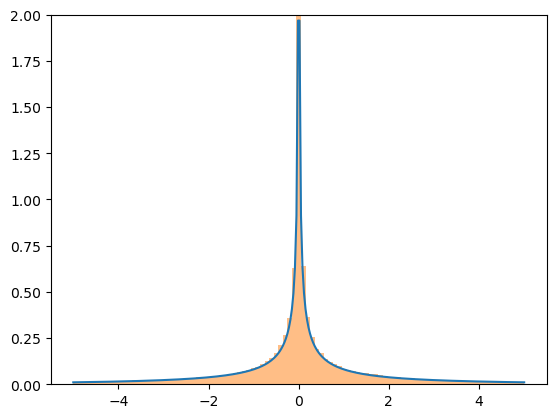
Quasi-Monte Carlo Sampling#
Random variables enable generation of quasi-random, low-discrepancy samples from statistical distributions.
import numpy as np
import matplotlib.pyplot as plt
from scipy import stats
X = stats.Normal()
rng = np.random.default_rng(7824387278234)
qrng = stats.qmc.Sobol(1, rng=rng) # instantiate a QMCEngine
bins = np.linspace(-3.5, 3.5, 31)
plt.hist(X.sample(512, rng=qrng), bins, alpha=0.5, label='quasi-random')
plt.hist(X.sample(512, rng=rng), bins, alpha=0.5, label='pseudo-random')
plt.title('Histogram of normally-distributed sample')
plt.legend()
plt.show()
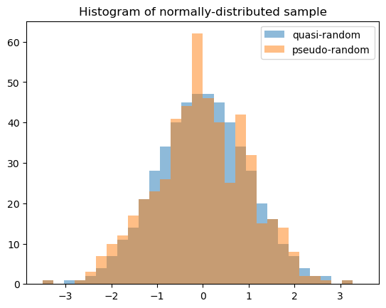
Note that when generating multiple samples (e.g. len(shape) > 1), each slice along the zeroth axis is an independent, low-discrepancy sequency. The following generates two independent QMC samples, each of length 512.
samples = X.sample((512, 2), rng=qrng)
plt.hist(samples[:, 0], bins, alpha=0.5, label='sample 0')
plt.hist(samples[:, 1], bins, alpha=0.5, label='sample 1')
plt.title('Histograms of normally-distributed samples')
plt.legend()
plt.show()
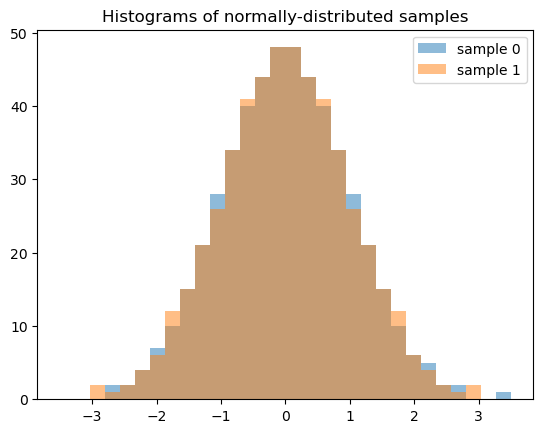
The result is quite different if we generate 512 independent QMC sequences, each of length 2.
samples = X.sample((2, 512), rng=qrng)
plt.hist(samples[0], bins, alpha=0.5, label='sample 0')
plt.hist(samples[1], bins, alpha=0.5, label='sample 1')
plt.title('Histograms of normally-distributed samples')
plt.legend()
plt.show()
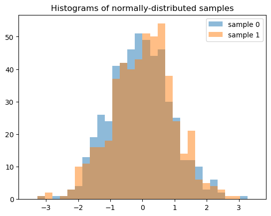
Accuracy#
For some distributions, like scipy.stats.norm, almost all methods of the distribution are customized to ensure accurate computation. For others, like scipy.stats.gausshyper, little more than the PDF is defined, and the other methods must be computed numerically based on the PDF. For example, the survival function (complementary CDF) of the Gauss hypergeometric distribution is calculated by numerically integrating the PDF from 0 (the left end of the support) to x to get the CDF, then the complement is taken.
a, b, c, z = 1.5, 2.5, 2, 0
x = 0.5
frozen = stats.gausshyper(a=a, b=b, c=c, z=z)
frozen.sf(x)
np.float64(0.28779340921080643)
frozen.sf(x) == 1 - integrate.quad(frozen.pdf, 0, x)[0]
np.True_
However, another approach would be to numerically integrate the PDF from x to 1 (the right end of the support).
integrate.quad(frozen.pdf, x, 1)[0]
0.28779340919669805
These are distinct but equally valid approaches, so assuming the PDF is accurate, it is unlikely that the two results are inaccurate in the same way. Therefore, we can estimate the accuracy of the results by comparing them.
res1 = frozen.sf(x)
res2 = integrate.quad(frozen.pdf, x, 1)[0]
abs((res1 - res2) / res1)
np.float64(4.902259981810363e-11)
The new infrastructure is aware of several different ways for computing most quantities. For example, this diagram illustrates the relationships between various distribution functions.
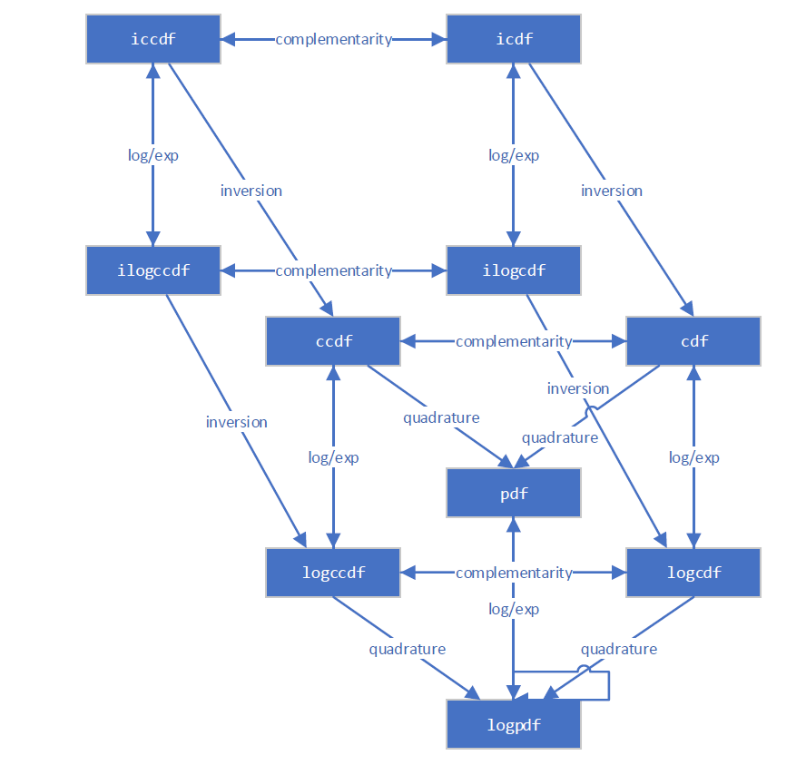
It follows a decision tree to choose what is expected to be the most accurate way of estimating the quantity. These specific decision trees for the “best” method are subject to change between versions of SciPy, but an example for computing the complementary CDF might look something like:
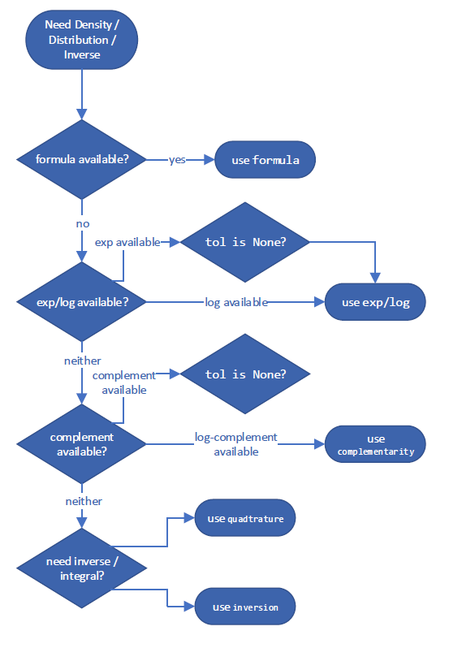
and for calculating a moment:
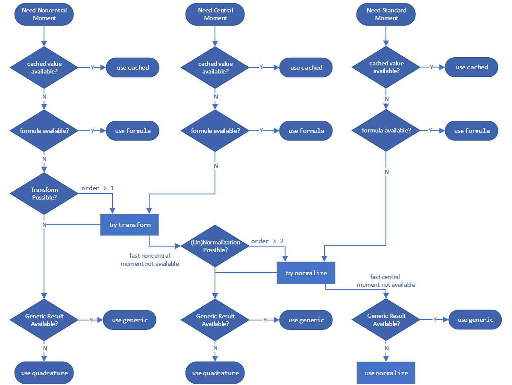
However, you can override the method it uses with the method argument.
GaussHyper = stats.make_distribution(stats.gausshyper)
X = GaussHyper(a=a, b=b, c=c, z=z)
For ccdf, method='quadrature' integrates the PDF in right tail.
X.ccdf(x, method='quadrature') == integrate.tanhsinh(X.pdf, x, 1).integral
np.True_
method='complement' takes the complement of the CDF.
X.ccdf(x, method='complement') == (1 - integrate.tanhsinh(X.pdf, 0, x).integral)
np.True_
method='logexp' takes the exponential of the logarithm of the CCDF.
X.ccdf(x, method='logexp') == np.exp(integrate.tanhsinh(lambda x: X.logpdf(x), x, 1, log=True).integral)
np.True_
When in doubt, consider trying different methods to compute a given quantity.
Performance#
Consider the performance of calculations involving the Gauss hypergeometric distribution. For scalar shapes and argument, performance of the new and old infrastructures are comparable. The new infrastructure is not expected to be much faster; although it reduces the “overhead” of parameter validation, it is not significantly faster at numerical integration of scalar quantities, and the latter dominates the execution time here.
%timeit X.cdf(x) # new infrastructure
1.1 ms ± 3.04 μs per loop (mean ± std. dev. of 7 runs, 1,000 loops each)
%timeit stats.gausshyper.cdf(x, a, b, c, z) # old infrastructure
1.01 ms ± 22.8 μs per loop (mean ± std. dev. of 7 runs, 1,000 loops each)
np.isclose(X.cdf(x), stats.gausshyper.cdf(x, a, b, c, z))
np.True_
But the new infrastructure is much faster when arrays are involved. This is because the underlying integrator (scipy.integrate.tanhsinh) and root finder (scipy.optimize.elementwise.find_root) developed for the new infrastructure are natively vectorized, whereas the legacy routines used by the old infrastructure (scipy.integrate.quad and scipy.optimize.brentq) are not.
x = np.linspace(0, 1, 1000)
%timeit X.cdf(x) # new infrastructure
4.24 ms ± 40.7 μs per loop (mean ± std. dev. of 7 runs, 100 loops each)
%timeit stats.gausshyper.cdf(x, a, b, c, z) # old infrastructure
938 ms ± 16.8 ms per loop (mean ± std. dev. of 7 runs, 1 loop each)
Comparable performance improvements can be expected for array calculations whenever the underlying functions are computed by either numerical quadrature or inversion (root-finding).
Visualization#
We can readily visualize functions of the distribution underlying random variables using the convenience method, plot.
import matplotlib.pyplot as plt
ax = X.plot()
plt.show()
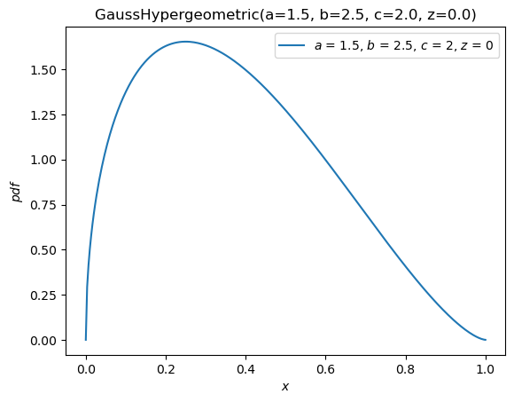
X.plot(y='cdf')
plt.show()
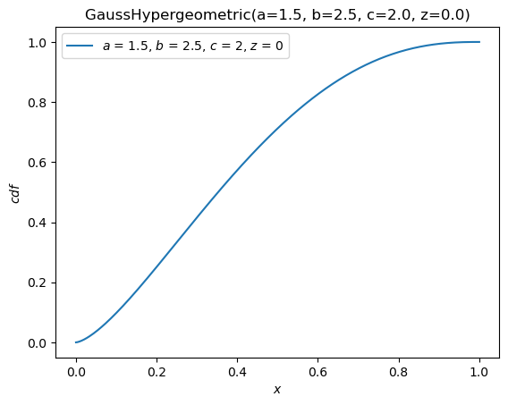
The plot method is quite flexible, with a signature inspired by The Grammar of Graphics. For instance, with the argument \(x\) on \([-10, 10]\), plot the PDF against the CDF.
X.plot('cdf', 'pdf', t=('x', -10, 10))
plt.show()
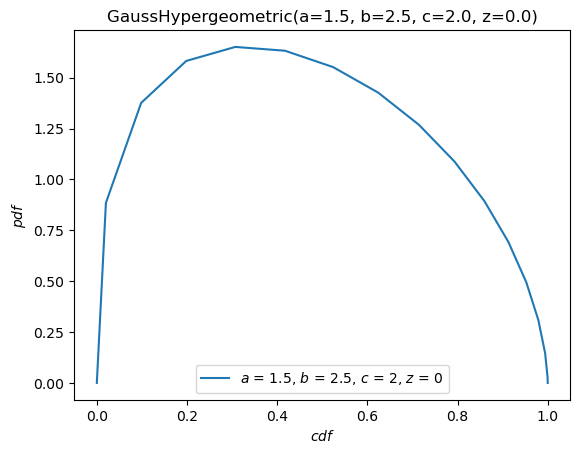
Order Statistics#
As seen in the “Fit” section above, there is now support for distributions of order statistics of random samples from distribution. For example, we can plot the probability density functions of the order statistics of a normal distribution with sample size 4.
n = 4
r = np.arange(1, n+1)
X = stats.Normal()
Y = stats.order_statistic(X, r=r, n=n)
Y.plot()
plt.show()
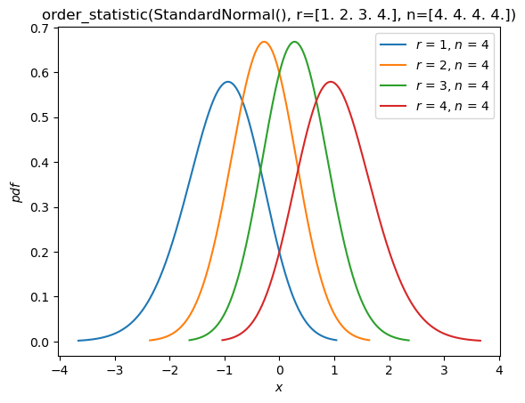
Compute the expected values of these order statistics:
Y.mean()
array([-1.02937537, -0.29701138, 0.29701138, 1.02937537])
Conclusion#
Although change can be uncomfortable, the new infrastructure paves the road to an improved experience for users of SciPy’s probability distributions. It is not complete, of course! At the time this guide was written, the following features are planned for future releases:
Additional built-in distributions (besides
NormalandUniform)Discrete distributions
Circular distributions, including the ability to wrap arbitrary continuous distributions around the circle
Support for other Python Array API Compatible backends beyond NumPy (e.g. CuPy, PyTorch, JAX)
As always, development of SciPy is done for the SciPy community by the SciPy community. Suggestions for other features and help implementing them are always appreciated.
We hope this guide motivates the advantages of trying the new infrastructure and simplifies the process.